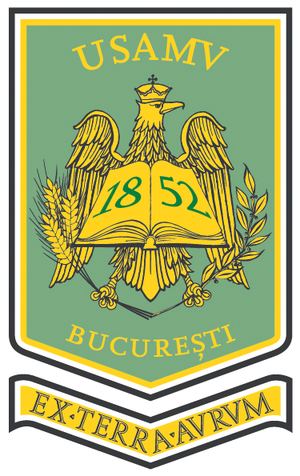
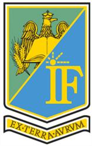

Prezentări interactive cu animații și suportul de curs · anul universitar 2026–2027
Suprafețele de referință, tipurile de proiecții, Stereo 70, sistemul X–Y, Marea Neagră 1975, transformarea cu RomGEO.
▶ Prezentarea completăEvoluția stației totale, echipamentul de teren, constelațiile GNSS în 2026, poziționarea RTK prin ROMPOS, aplicații.
▶ Prezentarea completăDEM / DSM / DTM, norul de puncte, curbe de nivel, profile, volume, fluxul de lucru CAD, monitorizarea canalelor.
▶ Prezentarea completăTipuri de drone și cadrul legal, principiul fotogrametriei, fluxul în 8 pași de la zbor la ortofotoplan, LiDAR.
▶ Prezentarea completăTeren existent → layout → optimizarea tubului pe fiecare tracker (FT drept față de XTR care urmărește terenul) → volume → drenaj: bălți, talveguri, rigole dimensionate.
▶ Prezentarea completăCum se folosesc: prezentarea completă se parcurge cu săgețile ← → sau cu butoanele de pe ecran, iar pe telefon prin glisare; Spațiu = pauză, F = ecran complet, N = notele de curs. Fiecare animație are bara ei: pauză, derulare, viteză; scenele 3D se rotesc cu mouse-ul sau cu degetul. Merge în Chrome, Edge, Firefox și Safari; pe telefon e mai comod în poziție orizontală.